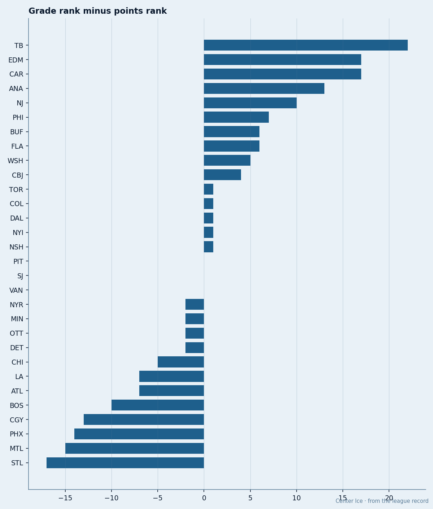

TB
TB ANA
ANA NJ
NJThe Grade-to-Point Gap: Tampa Outplays Its Roster by 22 Ranks, St. Louis Underplays by 17
The Bureau's average overall grade ranks 30 clubs. The standings rank them differently. The gap is the story nobody has written.
 Doug ReimerAnalytics editor, ex-video coach · The Slot Report
Doug ReimerAnalytics editor, ex-video coach · The Slot ReportTake each club's average overall grade from the Bureau's Book, rank those 30 numbers from highest to lowest, then rank the same 30 clubs by standings points. Subtract the grade rank from the points rank. A positive number means the team is collecting points at a rate its roster grade does not predict. A negative number means the opposite. The finding: Tampa Bay is +22. St. Louis is -17. The league's spread is 39 positions wide.

Tampa Bay's average overall grade is 69.8, the lowest in the league. No club sits below them on the Book. Their points total is 42, which ties them for 6th with  Nashville Predators and
Nashville Predators and  Vancouver Canucks and trails only
Vancouver Canucks and trails only  Toronto Maple Leafs at 52,
Toronto Maple Leafs at 52,  Colorado Avalanche at 50,
Colorado Avalanche at 50,  New York Rangers at 46, and
New York Rangers at 46, and  Dallas Stars at 45. The gap between 28th in talent and 6th in results is the widest in hockey.
Dallas Stars at 45. The gap between 28th in talent and 6th in results is the widest in hockey.
St. Louis runs the same arithmetic in reverse. Their average overall grade is 76.2, which ranks 8th. Their points total is 26, which ranks 25th. Only the Montreal Canadiens (-15) and the  Phoenix Coyotes Coyotes (-14) sit as far below their expected finish.
Phoenix Coyotes Coyotes (-14) sit as far below their expected finish.
| abbr | avg_ovl | pts | grade_rank | pts_rank | gap |
|---|---|---|---|---|---|
| TB | 69.8 | 42 | 28 | 6 | +22 |
| EDM | 71.4 | 41 | 26 | 9 | +17 |
| CAR | 73.3 | 43 | 22 | 5 | +17 |
| ANA | 69.2 | 32 | 29 | 16 | +13 |
| NJ | 73.8 | 41 | 19 | 9 | +10 |
| PHI | 70.5 | 29 | 27 | 20 | +7 |
| BUF | 72.7 | 30 | 24 | 18 | +6 |
| FLA | 68.1 | 27 | 30 | 24 | +6 |
| WSH | 74.2 | 38 | 16 | 11 | +5 |
| CBJ | 73.9 | 33 | 18 | 14 | +4 |
| TOR | 77.6 | 52 | 2 | 1 | +1 |
| COL | 77.2 | 50 | 3 | 2 | +1 |
| DAL | 76.7 | 45 | 5 | 4 | +1 |
| NYI | 74.6 | 34 | 14 | 13 | +1 |
| NSH | 76.2 | 42 | 7 | 6 | +1 |
| PIT | 73.7 | 29 | 20 | 20 | 0 |
| SJ | 74.0 | 31 | 17 | 17 | 0 |
| VAN | 76.4 | 42 | 6 | 6 | 0 |
| NYR | 78.5 | 46 | 1 | 3 | -2 |
| MIN | 71.6 | 23 | 25 | 27 | -2 |
| OTT | 75.4 | 33 | 12 | 14 | -2 |
| DET | 76.1 | 38 | 9 | 11 | -2 |
| CHI | 73.2 | 22 | 23 | 28 | -5 |
| LA | 75.3 | 29 | 13 | 20 | -7 |
| ATL | 73.4 | 22 | 21 | 28 | -7 |
| BOS | 76.1 | 29 | 10 | 20 | -10 |
| CGY | 74.3 | 22 | 15 | 28 | -13 |
| PHX | 76.8 | 30 | 4 | 18 | -14 |
| MTL | 75.7 | 24 | 11 | 26 | -15 |
| STL | 76.2 | 26 | 8 | 25 | -17 |
What the gap measures
The average overall grade is a blunt instrument. It treats every player on the roster the same, whether he logs 22.4 minutes or 7.3. A club that plays its 85s for 20 minutes a night and its 65s for 8 will outproduce the average grade. A club that spreads minutes evenly will not. The gap captures that allocation effect without naming the coach.
 TBL spends $45.79M and earns $1.09M per point, the 3rd-cheapest rate in the league. Their 3 players rated 80 or above are
TBL spends $45.79M and earns $1.09M per point, the 3rd-cheapest rate in the league. Their 3 players rated 80 or above are  Vincent Lecavalier90 at 84, a goalie in
Vincent Lecavalier90 at 84, a goalie in  Nikolai Khabibulin92 at an overall the Book does not print for netminders on the same scale, and a third name the sheet's top-60 table does not carry. Eight players grade 75 or above. That is the thinnest top-end of any club in the standings' top 8.
Nikolai Khabibulin92 at an overall the Book does not print for netminders on the same scale, and a third name the sheet's top-60 table does not carry. Eight players grade 75 or above. That is the thinnest top-end of any club in the standings' top 8.
 St. Louis Blues spends $56.63M and earns $2.18M per point, the 4th-most-expensive rate. They carry 9 players at 75+ and 4 at 80+:
St. Louis Blues spends $56.63M and earns $2.18M per point, the 4th-most-expensive rate. They carry 9 players at 75+ and 4 at 80+:  Keith Tkachuk84 at 90,
Keith Tkachuk84 at 90,  Chris Pronger80 at 86,
Chris Pronger80 at 86,  Brent Johnson79 at 85, and one more in the 80s. Their payroll is $11M above Tampa's. Their points are 16 below.
Brent Johnson79 at 85, and one more in the 80s. Their payroll is $11M above Tampa's. Their points are 16 below.

The middle holds
Thirteen clubs sit within 1 position of their grade rank. Tampa, Edmonton, Carolina, Anaheim, and New Jersey are the only five that clear +7. St. Louis, Montreal, Phoenix, Calgary, Boston, Atlanta, and Los Angeles are the only seven that fall below -6. The distribution has fat tails: a handful of clubs dramatically outplay or underplay what the Book says their roster is, and the rest land where you'd expect.
 Edmonton Oilers and
Edmonton Oilers and  Carolina Hurricanes are the other two clubs outplaying their grade by 17 or more. Edmonton's average overall is 71.4, 26th in the league; they sit 9th at 41 points. Carolina's average is 73.3, 22nd; they sit 5th at 43. Three of the five biggest overachievers share a trait the sheet makes visible: all three run a goaltender who plays 77% or more of the club's games.
Carolina Hurricanes are the other two clubs outplaying their grade by 17 or more. Edmonton's average overall is 71.4, 26th in the league; they sit 9th at 41 points. Carolina's average is 73.3, 22nd; they sit 5th at 43. Three of the five biggest overachievers share a trait the sheet makes visible: all three run a goaltender who plays 77% or more of the club's games.  Tommy Salo81 is at 25 of 32 for Edmonton (78%).
Tommy Salo81 is at 25 of 32 for Edmonton (78%).  Kevin Weekes86 is at 25 of 32 for Carolina (78%). Khabibulin is at 27 of 31 for Tampa (87%).
Kevin Weekes86 is at 25 of 32 for Carolina (78%). Khabibulin is at 27 of 31 for Tampa (87%).
St. Louis splits between Brent Johnson (23 games, 74%) and  Chris Osgood78 (11 games, 35%). That is not the league's worst split, but it is a split on a club that cannot afford one.
Chris Osgood78 (11 games, 35%). That is not the league's worst split, but it is a split on a club that cannot afford one.
The gap does not mean coaching
The gap measures the distance between the Book's arithmetic and the standings' arithmetic, and it carries no attribution. Coaching, culture, schedule, and luck all land inside that distance. What it says is that if you lined up 30 rosters by average grade and 30 records by points, Tampa Bay and St. Louis would be the furthest apart from what a single number predicts.
Allocation drives the gap. Tampa Bay's top-end players get the minutes their grades suggest they should. St. Louis's do not, or the players behind them get minutes the grades do not justify. The method will not tell you which, but the ice-time numbers will, and that is the next piece.
The method is average overall grade ranked against points ranked. The finding is a 39-position spread across 30 clubs, with Tampa Bay at one end and St. Louis at the other. The scatter below shows that the correlation between the two ranks exists but is weak: the horizontal spread is under 10 points of average grade, the vertical is 30 points of standings.